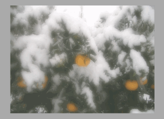

正射投影マッピング
flyt ファイルをレイアウトエディタにドロップすれば読み込んで確認することができます。
確認できるサンプル
- Projection_Sample_00.flyt

『正射投影マッピング』を使用し、背景が映り込む水滴を表現しました。
水滴の表現
- 「P_Drop_00」のピクチャペインについて
- 0段目のテクスチャでマスクをしています。
- 1段目のテクスチャをマッピング設定/マッピング方法「正射投影マッピング」に設定
- 2段目にインダイレクトテクスチャを使用し、球状に背景を歪ませています。
- SRTアニメーションで下方向に落下させています。
- 「P_DropLight_00」のピクチャペインについて
- 水滴の光沢を表現するために重ねています。
→フラグメントオペレーションは「加算」です。
Projection_Sample_01.flytについて
Projection_Sample_00.flytと同じ水滴表現をより処理が軽い方法で実現しました。
インダイレクトテクスチャにアルファテクスチャを入れて、テクスチャの段数を減らしています。
Projection_Sample_00との違い
- 「P_Drop_00 」のピクチャペインについて
- 0段目のテクスチャで「正射投影マッピング」に設定
- 1段目にインダイレクトテクスチャを使用し、球状に背景を歪ませています。
- 更にアルファイメージを追加し、テクスチャコンパイナ/アルファ設定「最小値を使用」に設定しマスクをしています。
テクスチャフォーマットごとの挙動の違いについて
インダイレクトテクスチャはフォーマットの選び方によって、絵を歪ませる挙動が変わります。